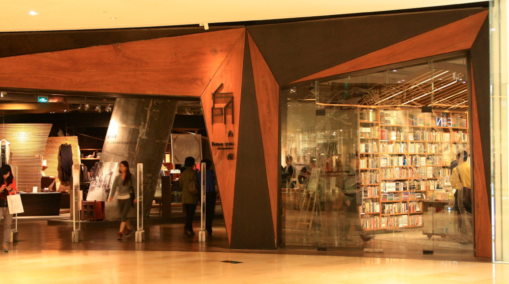

在广州逛街，一转弯，一抬头，常会发现小惊喜；以下几家书店，每个都是逛街时的偶遇。
方所书店
 第一次是在朋友带我们去吴系茶餐厅的路上，穿过太古汇，朋友说这里有家书店你们一定喜欢，本来打算以后再逛，结果茶餐厅排队等位，就又折回来进了这家“方所”。方所除了是一家书店、还像其他许多独立书店一样卖许多创意小玩意和生活物件，不过这里的东西精致许多，更有展览的味道，价格也大多贵得让你咋舌。除此以外还有咖啡座、艺廊，甚至还有服装售卖。目前为止，大概是我们在广州去过的规模最大的一家独立书店。有个深圳的朋友说每次来广州，都一定会去的一个地方，就是方所。
唐宁书店
第二次是从宜家出来，想随便找个地方吃饭，误打误撞去了中信广场下边的后街，结果被我们发现了唐宁书店，这个名字有些耳熟的书店原来就是广州书店的地标。就像台北的诚品，北京的三联，上海的季风，在广州，说到书店，最有代表性的就是唐宁了。后街的唐宁书店只是一家分店，店面不大，不过我们就是在这里发现了“广州返寻味”的漫画明信片，地图，和年历。
联合书店
第三次是逛北京路的时候，自然而然就遇到了联合书店，在来之前我甚至不知道这是香港联合书店在内地开的第一家也是目前唯一一家分店。联合书店一共六层，不过最上面两层大概只有展览的时候才会开放。印象中这里的绘本书架是最丰富的，还有许多港台书，外文书和设计书。一楼左边的墙上写着这个书店的前世今生，其实一百年前这里就是中华书局广州分局的所在，联合书店花了500万将这栋老楼改造成现在精美又有广州风貌的模样。

每次逛书店都会感慨这么多的好书，好想每周都找个下午，让自己泡在书店里。虽然其实大多数时候我们都是逛着逛着发现一些好书，然后很屌丝的记下来回头去网上买。穷人逛书店的意义其实不在于买，只在于逛。书店里的时光是放慢了的，与世隔绝的。它能提醒你不管外面多喧嚣嘈杂，你随时都可以慢下来找一份属于自己的宁静空间，提醒你别忘了其实你的内心一直在期望做出这样的选择。对我而言，逛书店还能提醒我，家里墙角的书该找时间看看了。